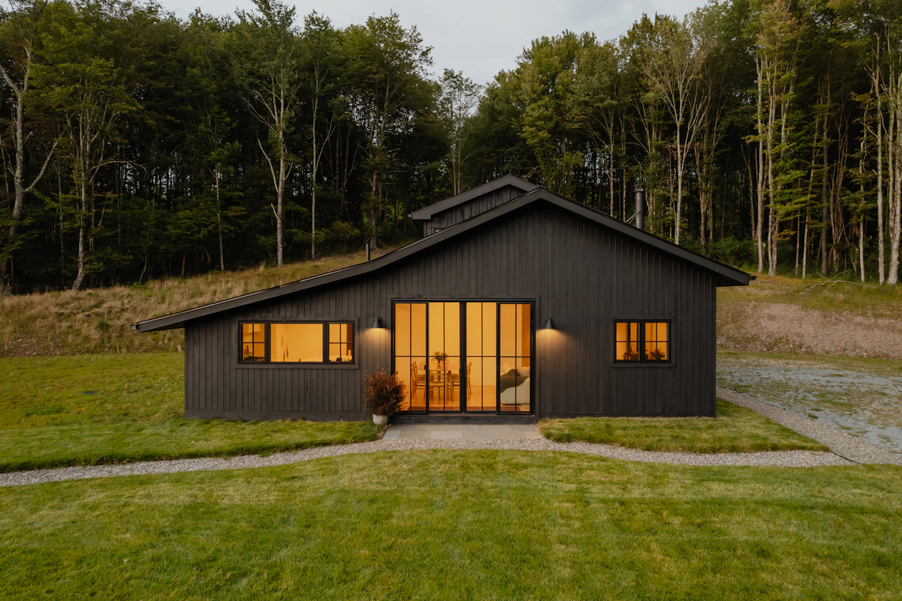
01Осталось 3
Мох
Тёмный дом-амбар для семьи с детьми. Камин, второй свет и терраса под соснами.
- Площадь
- 145 м²
- Спальни
- 3
- Участок
- 30 сот.
от 48 млн ₽
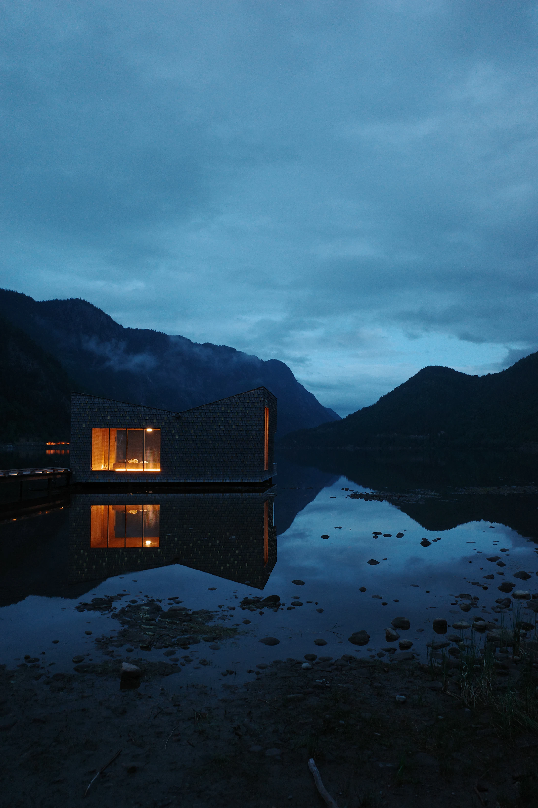
Карелия · Северный берег Ладоги
61°42′ с.ш. 30°41′ в.д.
Архитектурный посёлок из 27 домов в сосновом лесу на берегу озера
ЛистайтеЗдесь слышно, как падает снег и как озеро дышит туманом по утрам. Мы сохранили каждую сосну, а дома поставили так, чтобы из окон были видны только лес и вода.
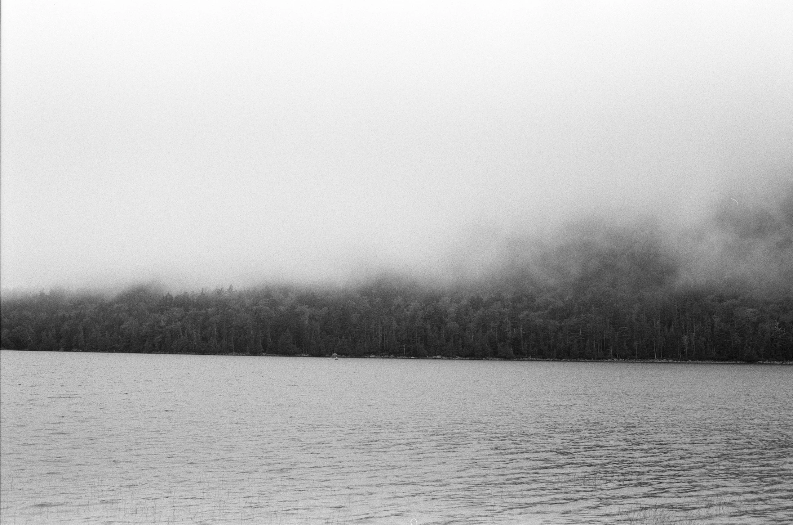
Генплан создавали вокруг деревьев, а не вместо них. Каждый участок проектировали отдельно: под рельеф, солнце и вид на воду.
Сохранено 94% деревьев. Дороги и сети проложены по существующим просекам.
Каждый дом развёрнут к озеру, остекление от пола до потолка.
Карельская сосна, гранит и патинированная медь. Ничего, что состарится некрасиво.
Участки от 30 соток. Дома не видят друг друга даже зимой.
«Мы не строили дома в лесу. Мы оставили лес и аккуратно вписали в него дома».
Анна Вересова, главный архитектор бюро «Линия леса»
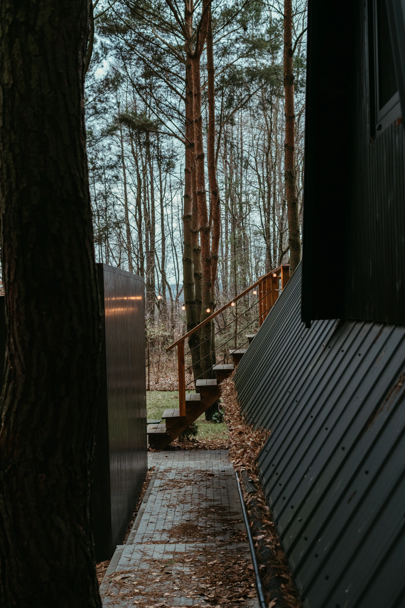
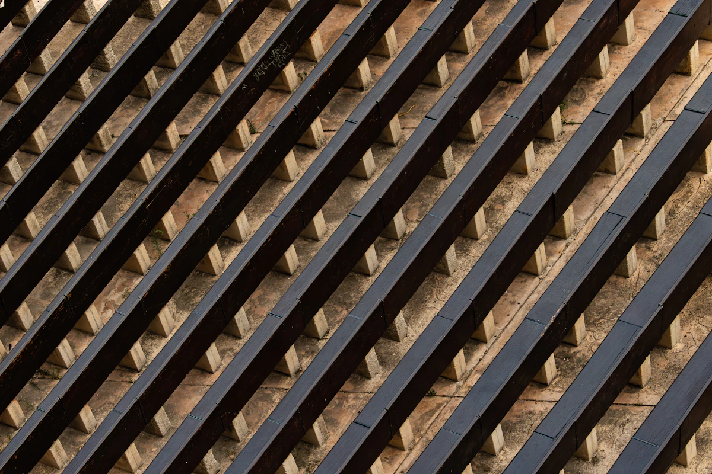
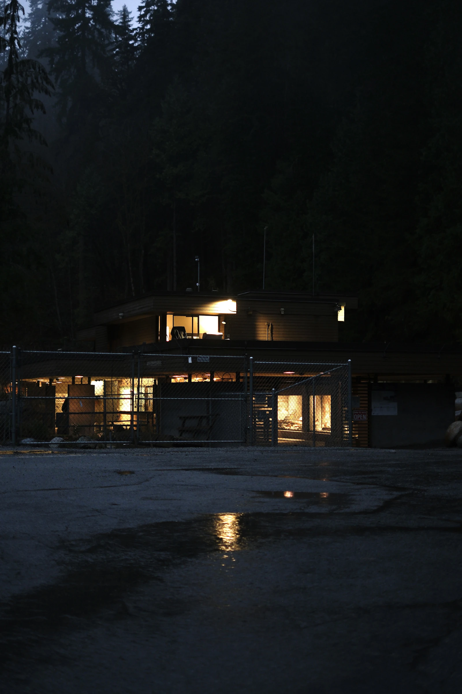

Тёмный дом-амбар для семьи с детьми. Камин, второй свет и терраса под соснами.
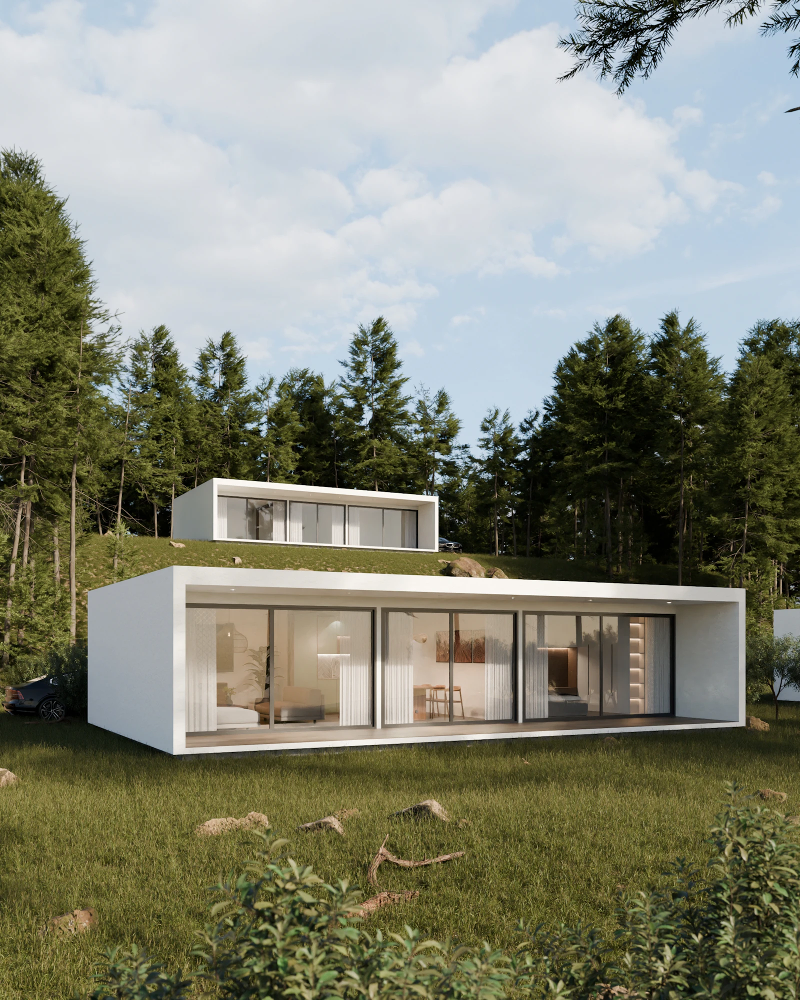
Белый двухуровневый дом с эксплуатируемой кровлей. Над лесом — терраса для закатов.
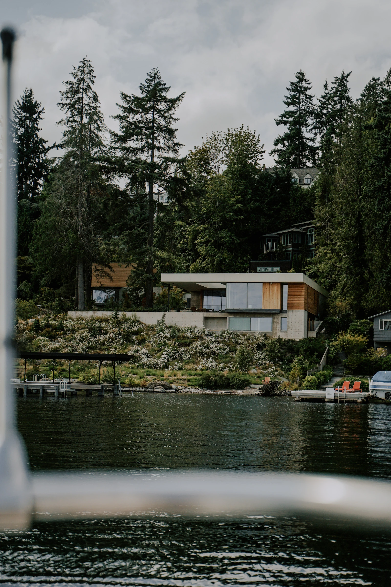
Резиденция на первой линии: собственный причал, банный дом и гостевой флигель.
Дома передаются с чистовой отделкой в одной из трёх палитр: «Мох», «Гранит» или «Лён». Мебель и свет бюро подбирает вместе с вами.
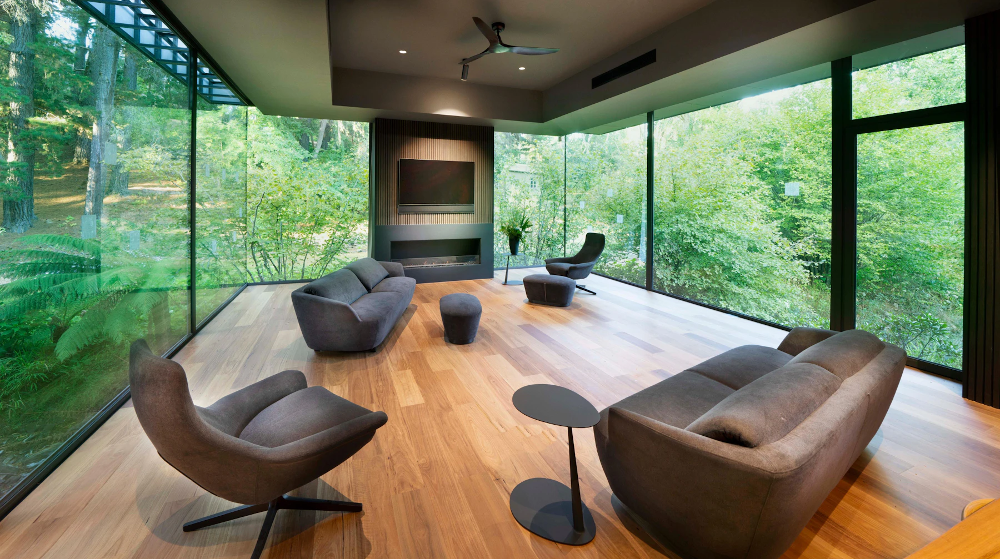
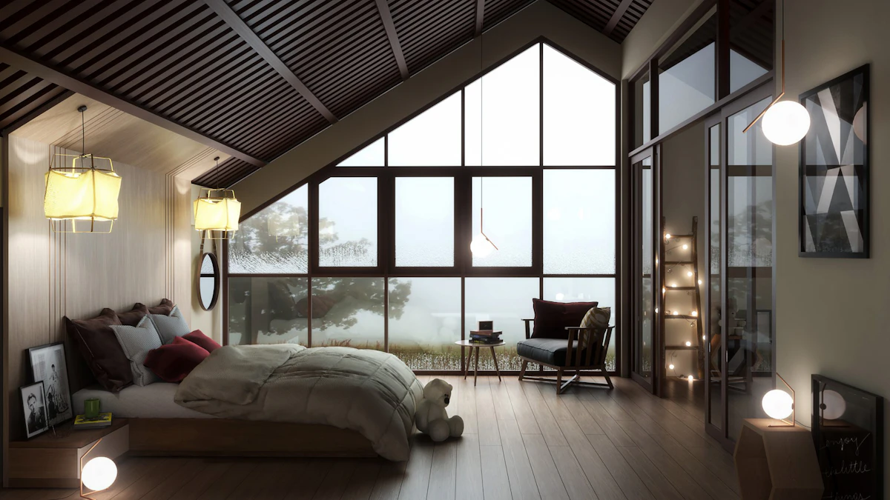
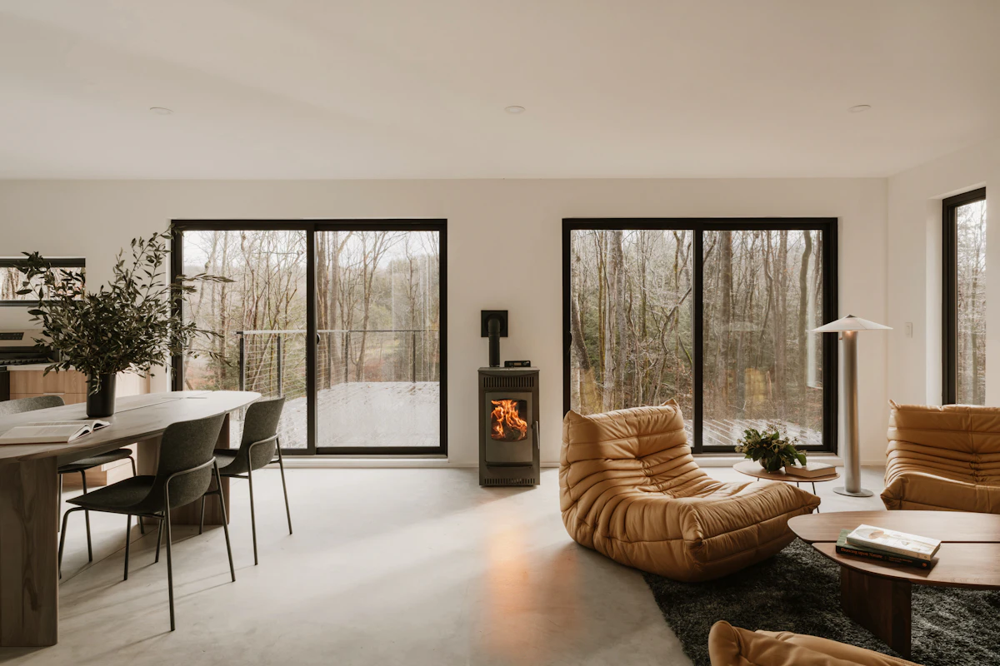
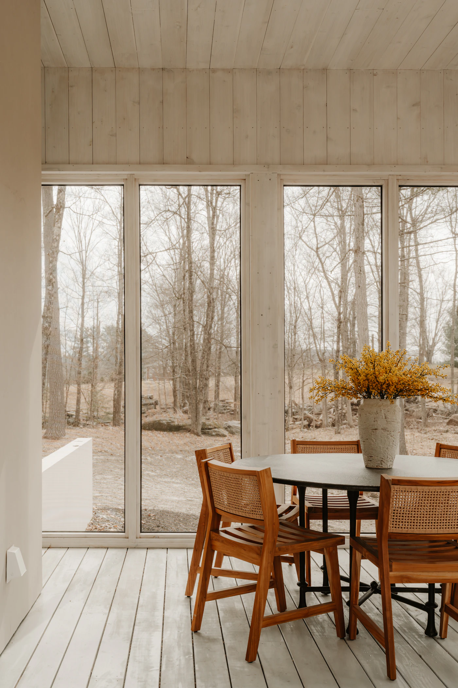
Посёлок в Приладожье, в двух с половиной часах от Петербурга. Последние четыре километра — собственная дорога через лес.
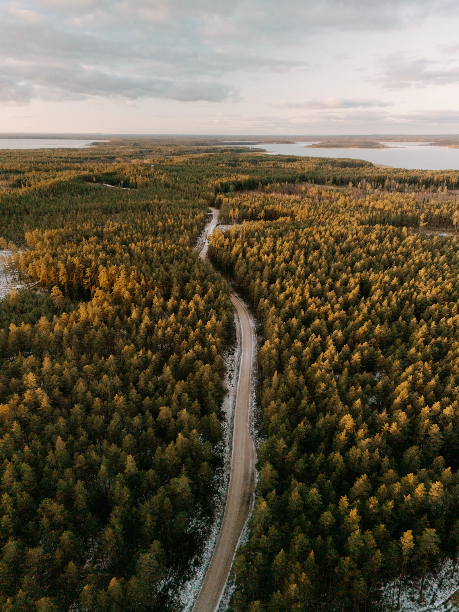
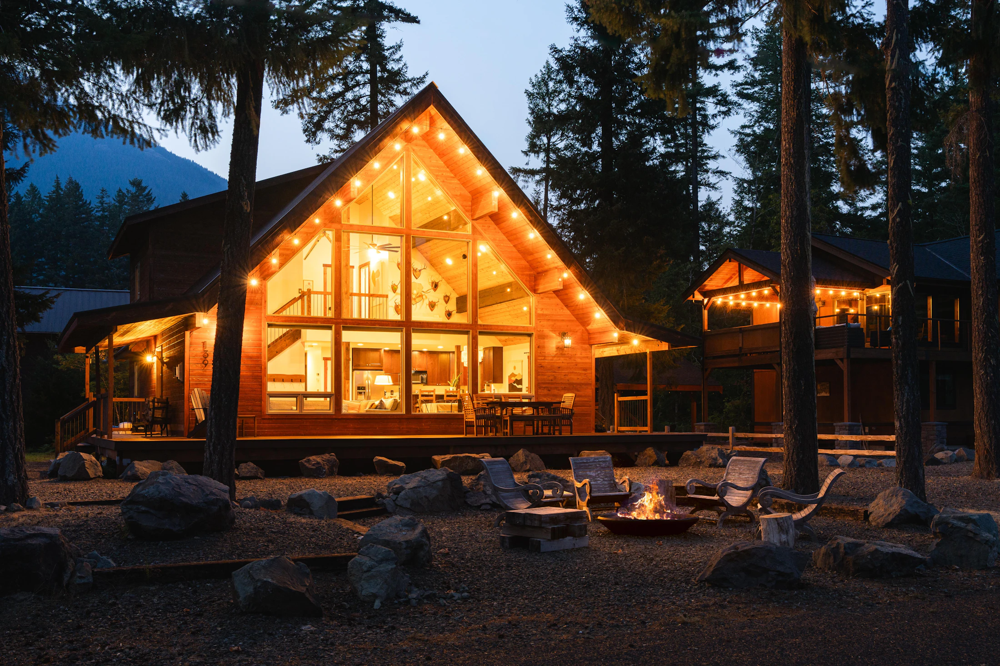
Покажем посёлок лично в удобный для вас день. Трансфер из Петербурга за наш счёт.